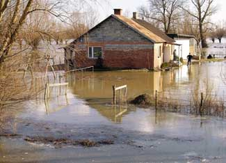

Recently when damaging floods inundated nine Midwestern states, farmers in those areas were forced to come to grips with the damages to their crops and homesteads. Already, most of the counties in Iowa have been declared federal disaster areas, with even more places expected to flood in the coming weeks.
Farm Aid - the nonprofit organization headed up by Willie Nelson, Neil Young, John Mellencamp and Dave Matthews - is taking the necessary steps to help. To get funds to victims more quickly, Farm Aid is working with local churches, rural organizations and farm groups. Recently, they gave their first grant of $10,000 to an Iowa farm organization, making it easier to give emergency assistance, such as food and shelter, to affected farmers in the area.
To help the farmers affected by the Midwest floods, you can donate to Farm Aid’s Family Farm Disaster Fund. All donations are tax-deductible.
Learn more about Farm Aid’s good works:
|
 FOTOLIA Recently when damaging floods inundated nine Midwestern states, farmers in those areas were forced to come to grips with the damages to their crops and homesteads. You can help by making a donation to Farm Aid. |
|
|